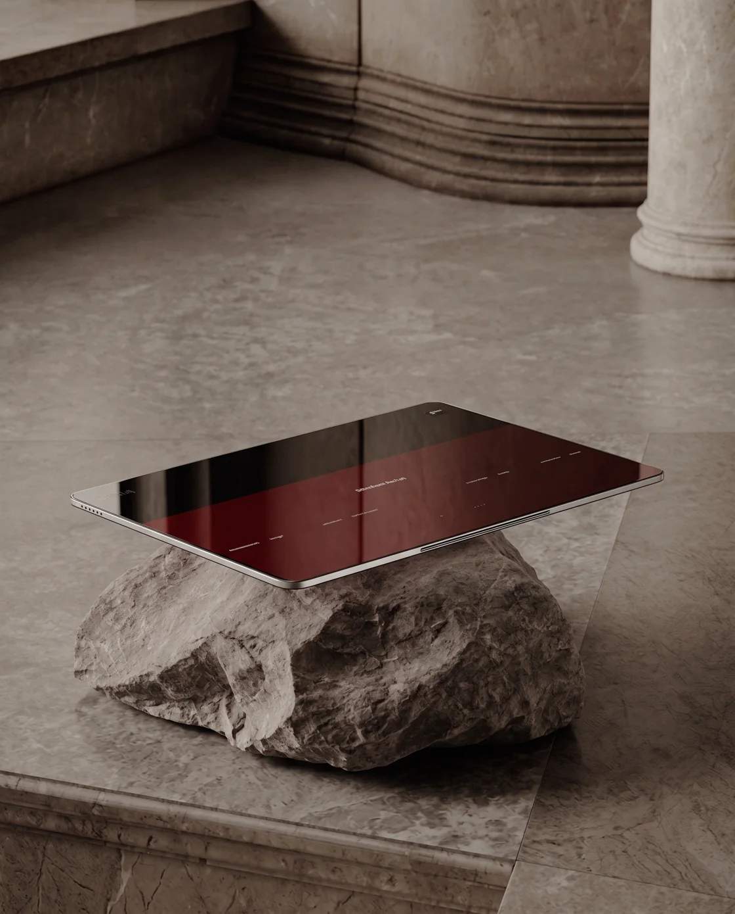

credits · harde bovengrens
Zelfde beeld. Andere eerste indruk.
Voor bedrijven die goed werk leveren.
Goed in je vak.
Laat het zien.
Een website die voelt als jouw bedrijf. Met aandacht voor het beeld, een helder verhaal en een makkelijke stap naar contact.
01 / Een eigen uitstraling02 / Gemaakt voor mobiel03 / Duidelijk contact

Direct: de propositie en voorbeelden staan voorop. Het beeld is een bestaande AI-studie, geen nieuwe generatie.
Een mooie eerste indruk.
Een duidelijke volgende stap.
Voor de ondernemer
Jouw vak, jouw verhaal, jouw contactroute.
Voor de bezoeker
Snel begrijpen wat je doet. Meteen weten waar je terechtkunt.
Drie werelden / één kwaliteitslat
Een stijl die
bij je werk past.
Open de bestaande voorbeelden. Dit zijn ontwerpstudies; geen opgeleverde klantcases.
01 · Vakbedrijven
↗Vertrouwen, vanaf het begin.
Diensten, servicegebied en contact duidelijk in beeld.
02 · Renovatie & interieur
↗Laat de details spreken.
Een rustige, redactionele presentatie van ontwerp en afwerking.
03 · Personal training
↗Energie met richting.
Een menselijk verhaal en een laagdrempelige eerste afspraak.
De voorbeeldsites bevatten nog democontent en zijn niet klaar voor klantpublicatie. De tegels zijn vormgegeven navigatie, geen screenshots of bewijs van resultaat.
Begin bij jouw bedrijf
Wat moet jouw
website voor je doen?
Meer duidelijkheid over je diensten? Je werk beter laten zien? Makkelijker afspraken maken? Begin met die vraag.
Lab-proef: je briefing blijft hier en wordt niet verzonden.
Voor Joey / uitvoering & onderbouwing
Wat is er
nu echt gedaan?
1 oktober 2026 · Een concrete proef met bestaand materiaal. Nieuwe generatie wacht op toegang tot het betaalde account.
geen generatie gestart
4 stills + 2 drafts + 1 final
Betaald tegoed nog niet bereikbaar
De gekoppelde Apple-login toont Free / 0 credits en geen andere betaalde workspace. Jouw genoemde circa 500 credits en vervaldatum zijn niet bevestigd. Er wordt niets bijgekocht en geen abonnement aangepast.
Het update-log verschijnt na aanmelden.
Waarom deze keuze?
Je marktonderzoek geeft snelheid, praktische informatie en vertrouwen voorrang. Daarom blijft contact zichtbaar en openen de voorbeelden zonder een lange animatie te moeten afwachten.
Voor jouw eigen showroom is de bestaande Product A-richting een passende kwaliteitstest. Dat is een ontwerpkeuze, geen bewezen conversiewinst.
Wat is bewaard?
Je originele steen/tablet-beeld, Agency v1.5, de drie voorbeelden en alle eerdere experimenten. De twee nieuwe WebP-versies zijn technische exports, geen AI-generaties.
De bron bevat kleine gegenereerde tekst op het scherm. Die moet voor de definitieve versie worden verwijderd; daarna blijft echte website-UI in code.
Het 100-credit productieplan
| Stap | Instelling | Plafond |
|---|---|---|
| 1 · Clean still + mobiel | Nano Banana 2 · 2K · maximaal 4 pogingen × 2 | 8 credits |
| 2 · Motion vergelijken | Seedance 2.5 · 5s · 480p draft · maximaal 2 × 15 | 30 credits |
| 3 · Winnaar afwerken | Seedance 2.5 · 5s · 1080p · maximaal 1 × 60 | 60 credits |
Live prijscheck op 1 oktober; bij elke echte opdracht opnieuw berekenen met de gekozen bron. Ook afgekeurde resultaten tellen mee. Stoppen bij onvoldoende kwaliteit; 2 credits buffer. Geen automatische generatie vanuit deze pagina.
Een draft kan volgens het actuele model binnen zeven dagen worden afgewerkt. Alleen starten wanneer we die stap ook op tijd kunnen beoordelen.
Open het volledige plan met prompts en kostenstatus ↗Onderzoek en actuele mogelijkheden
- Eigen marktonderzoek: AI-Websitebedrijf-Deep-Research-Rapport, 19 augustus, opnieuw gelezen op 1 oktober. Vooral hoofdstuk 7 en 7B. Prognoses en nicheranglijsten zijn geen gevalideerde verkoopresultaten.
- NN/g — relevante beelden bij de bijbehorende inhoud. Ondersteunt begrijpelijkheid; voorspelt geen conversiewinst voor onze niche.
- web.dev — video en laadsnelheid. Eerst een lichte poster, video alleen wanneer nodig.
- Higgsfield — Seedance 2.5 vergelijking. Leveranciersvoorbeelden zijn geen kwaliteitstest van onze eigen output. Beschikbaarheid en instellingen daarom ook in de live catalogus gecontroleerd.
Nano Banana 2: referentiebewerking en 2K. Seedance 2.5: referentiegestuurde video, 480p drafts en 1080p. AutoSprite blijft een andere Gamenfy-proef; dit budget krijgt één concrete bestemming.
Wat staat nog open?
- Het betaalde Higgsfield-account bereikbaar maken. De bestaande toestemming van 100 credits blijft gelden.
- Schermtekst opruimen en een bewuste mobiele beeldvariant maken.
- Beweging pas na still-review: geen vervorming, extra apparaten of instabiele steen.
- Echte iPhone-controle en feedback van een externe ondernemer. Nog geen bewezen winnaar.